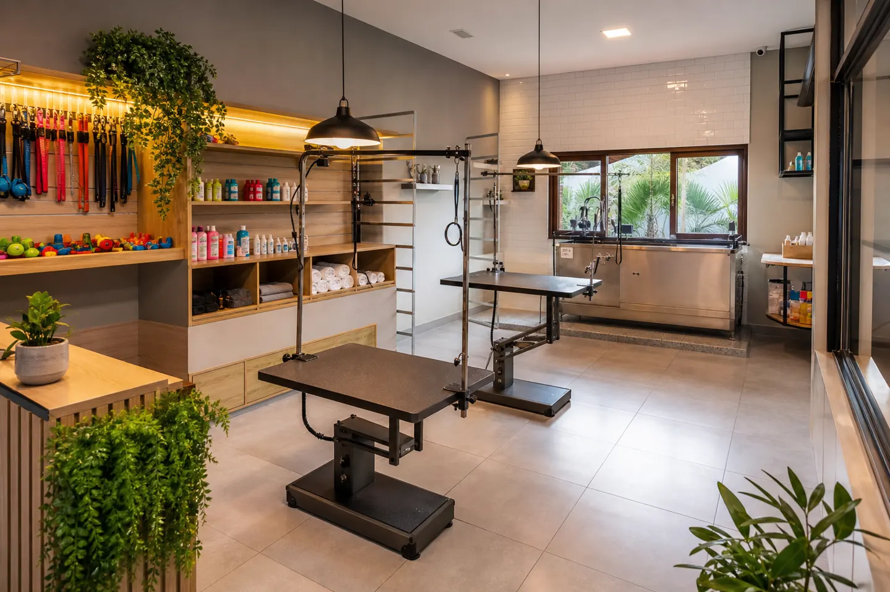

Cuidado profissional e carinhoso para seu pet
Pet Shop em Goiânia com avaliação 4,9 estrelas. Equipe atenciosa, instalações impecáveis e atendimento diferenciado no Jardim Atlântico.
A Baby Pet Center é um pet shop localizado no Jardim Atlântico, em Goiânia. Com nota 4,9 e 95 avaliações no Google, oferecemos serviços profissionais em um ambiente acolhedor. Empresa de empreendedoras que acolhe a comunidade LGBTQ+.
Banho profissional com produtos de qualidade que deixam seu pet limpinho e cheiroso
Tosa e penteados diferenciados para deixar seu pet ainda mais bonito
Variedade de produtos e acessórios para o seu pet
Atendimento especializado para raças de pelagem exigente como Husky
Trechos de avaliações públicas no Google · nota 4,9 (95 avaliações)
★★★★★“Minha Lou é muito bem cuidada pelos profissionais; cada banho um penteado diferente😍; atendimento muito bom e muitas coisas boas pra comprar; preço justo.”
★★★★★“O Bento Augusto ama ir à Baby Pet ficar limpinho e cheiroso! Quando chega, a casa incendeia com o perfume que usam nele! Toda semana está lá, atendimento diferenciado!”
★★★★★“Lugar maravilhoso, pessoal são cuidadosos, carinhosos e super profissionais. Me conquistou, meu bebê só toma banho lá agora 🥰”
| domingo | Fechado |
| segunda-feira | 08:30–18:00 |
| terça-feira | 08:30–18:00 |
| quarta-feira | 08:30–18:00 |
| quinta-feira | 08:30–18:00 |
| sexta-feira | 08:30–18:00 |
| sábado | 08:00–14:00 |
Conforme Google Maps; confirme feriados pelo WhatsApp.
Av. Ipanema, quadra 09,lote 38, sala 02, numero 343 - Jardim Atlântico, Goiânia - GO
WhatsApp: +55 62 99698-3114